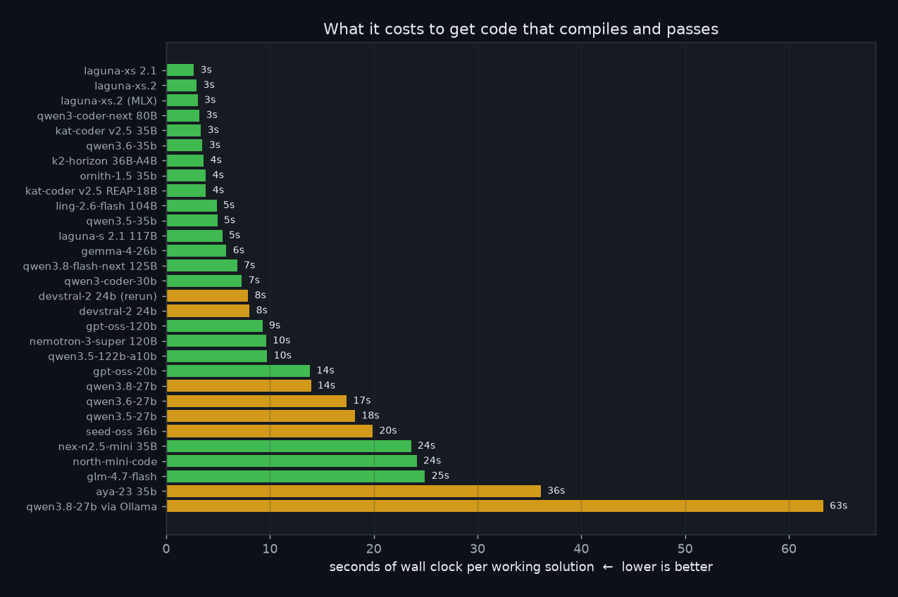
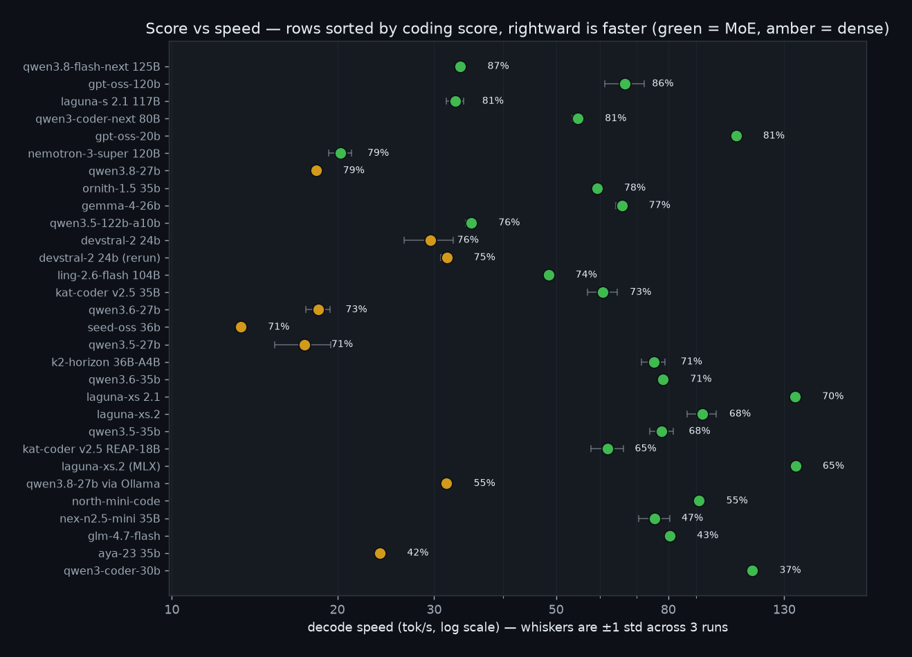
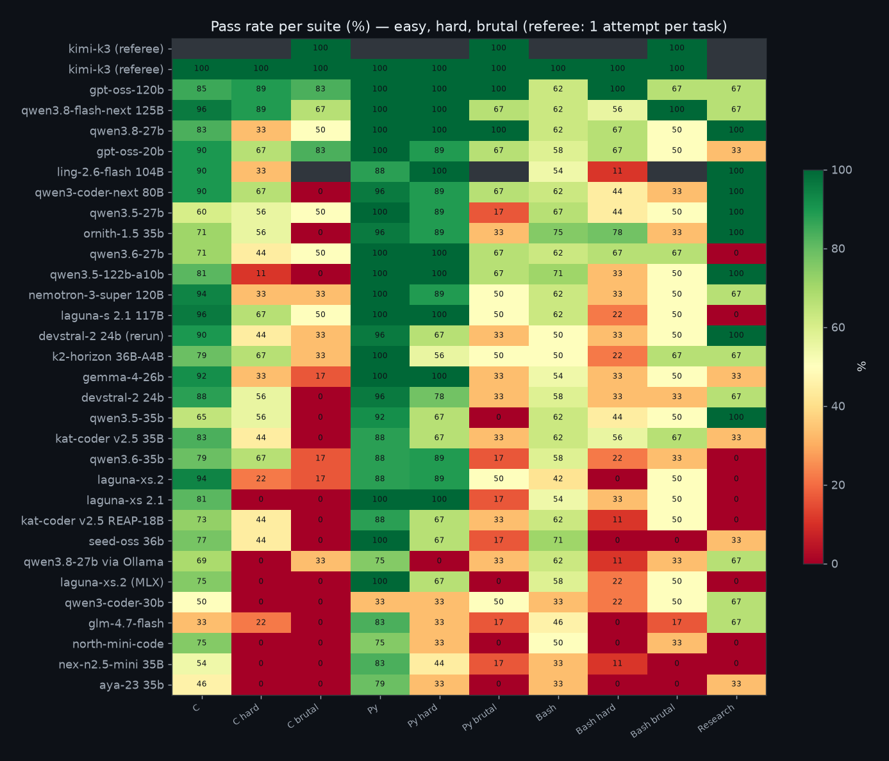

Every chart is rendered by scripts/make_charts.py from the same JSON
the tables read, so the two can never disagree. Green is MoE, amber is dense.
C, Python and Bash — easy + hard (research and brutal left out). 3 trials per task: temperature 0, then 0.7×2. The bar is total wall time, failures included, divided by how many trials passed. Lower is better — a wrong answer still costs its generation time.

Each row is a model's coding pass rate (the 126-task suite) against decode tok/s. Speed is a 1500-word essay about MIT — content is not graded. Median of 3 generations; whiskers are ±1 std. Upper-right wins.

The same hidden tests as the tables: C compiled with cc -std=c11, Python against asserts, Bash exact stdout. 3 trials per task (temp 0, then 0.7×2). Brutal is shown here but not folded into the 126-task headline.

Six tasks (2 C, 2 Python, 2 Bash) written so the textbook answer fails a specific case. 3 trials each, temp 0 then 0.7 twice. Scored separately — not in the 126-task total.
The same 8 C tasks, replayed with 1, 2, 4, 8… requests in flight. The line is aggregate tok/s across streams. Every answer is still compiled and tested. This scores the serving stack, not the model.

Three easy tasks (C range-sums, Python dedupe, Bash top-freq), each asked silent and told (runtime will be measured). Correctness is cheap; we time the code on a large hidden input (warm-up + best of 3). Each model gets two bars — silent and (warm-up + best of 3). Each model gets two bars — silent and told — because the gap between them is the point of the test: does the model need to be told to care about speed? A bar is the geometric-mean slowdown vs kimi-k3 (the referee baseline) for that variant, and is shown whenever all 3 tasks of that variant produced working code; a missing bar is labelled with how many did.

Same C problem every time: add up many ranges of an array. Two valid answers — a slow nested loop (~123 ms) or a fast prefix sum (~0.3 ms). We ask 20 times per wording at temperature 0.7 (sampling-randomness), each time a fresh sample so the model can vary. A cell is fast/N — how many answers used the fast algorithm. N is 20 when everything compiled; compile errors are dropped from the count (mid-grey), so 5 fast + 12 slow + 3 compile errors is 5/17. 0/20 is the slow loop every time; 20/20 is the prefix sum every time. err (dark grey) means all 20 failed to compile — that is not a slow algorithm.
Baseline (outlined first column) is the plain prompt with no extra wording. Every other column adds a framing. Greener than that row's baseline means the wording pushed the model toward the fast algorithm.

41 tasks (19 C, 11 Python, 11 Bash). One attempt, then up to 5 rounds with the raw compiler/test error fed back. Green = right first time; blue = fixed after seeing the error; red = still broken.